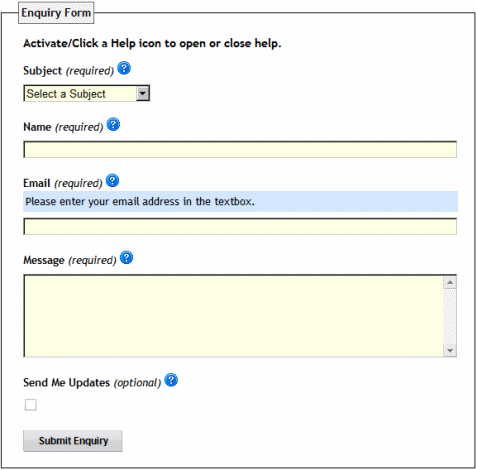
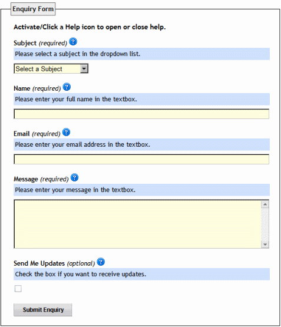
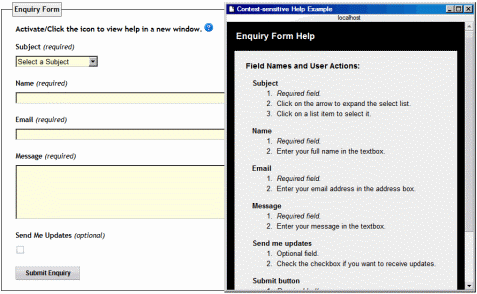
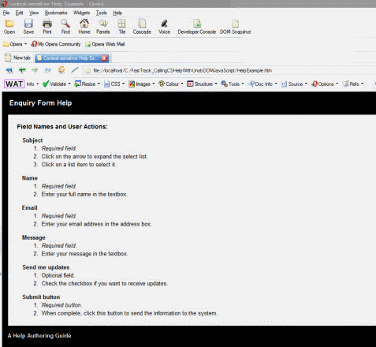

Accessible Context-sensitive Help with Unobtrusive DOM Scripting
This article demonstrates two methods of calling context-sensitive help in a web form: the Field Help Method and Form Help Method, in which unobtrusive DOM/JavaScript is employed to achieve the desired result. It also serves to illustrate the separation of the Structure and Behavior layers of a web page. Graceful degradation is employed to make sure that the help information is accessible if JavaScript is disabled or not available in a user agent. My sincere thanks go to Christian Heilmann, Jeremy Keith, Peter-Paul Koch, Simon Willison, and Mark "Tarquin" Wilton-Jones for their very educational blogs, books, and websites regarding unobtrusive DOM scripting, and Gez Lemon of The Paciello Group (TPG) for his personal support in the formulation of the Field Help Method script.
You can also access live examples from here - click here for the Field Help Method, and here for the Form Help Method.
Field Help Method
When I wrote this script, my design brief was as follows:
- Contain all context-sensitive help within the markup of a web form, placed below each field label.
- Control the show/hide display state of field-level help by user action (help icon) through unobtrusive DOM/JavaScript.
- If scripting is disabled in the user agent, ensure graceful degradation occurs:
- Automatically display help content beneath each field label.
- Disable the anchor links applied to all help icon images.
With scripting enabled, a field help icon is activated to open/close the help information, as shown in Figure 1.

Figure 1. Form with scripting enabled
With scripting disabled, all field help is revealed beneath each form label, providing "graceful degradation" of the script as shown in Figure 2.

Figure 2. Form with scripting disabled
Field help markup
We'll look at the JavaScript that powers this method later on, but first let's go through the markup for the form. First I associate the external JavaScript file with the web page that contains the form.
<head>
<script type="text/javascript" src="scripts/fieldhelp.js"></script>
</head>
Second, I establish a relationship between the <img> id attribute value of emailhelp, and the following <div> id attribute value of containeremailhelp. This is a variation
of the "related container" method that Gez Lemon demonstrates in his "Form Help without Popups" article, which uses the help icon as a trigger to open/close
the related field help content container. The <img> class attribute value "help" acts as the markup hook for the external JavaScript. Then, I use the <img> id
attribute value of "emailhelp" and preface it with the word "container" to create the help content <div> "id" attribute value of "containeremailhelp".
- Relating the Email field help container to its help icon image:
-
icon trigger:
img id="emailhelp" class="help" -
help container:
div id="containeremailhelp"
This establishes the relationship between the help icon image trigger and the help content container.
The following markup sample shows one label in the form - Email - and illustrates the "related container" principal.
<div>
<label for="email">
Email (required)
<img id="emailhelp" class="help" alt="help icon for email field"
width="16" height="16" src="images/help_small.gif">
</label>
</div>
<div id="containeremailhelp">
<p>
Please enter your email address in the textbox.
</p>
</div>
Field Help JavaScript
The following unobtrusive JavaScript powers this method:
/* begin addLoadEvent function - design by Simon Willison */
function addLoadEvent(func) {
var oldonload = window.onload;
if (typeof window.onload != 'function') {
window.onload = func;
} else {
window.onload = function() {
if (oldonload) {
oldonload();
}
func();
}
}
}
addLoadEvent(init);
addLoadEvent(function() {
/* more code to run on page load */
addLoadEvent(openClose);
});
/* end addLoadEvent function */
/* start function init() - design by Gez Lemon */
function init()
{
var objImage = document.getElementsByTagName('img');
var objHelp, objAnchor, objClone;
for (var iCounter=0; iCounter<objImage.length; iCounter++)
{
if (objImage[iCounter].className == 'help')
{
objHelp = document.getElementById('container' + objImage[iCounter].id);
objAnchor = document.createElement('a');
objClone = objImage[iCounter].cloneNode(true);
objAnchor.setAttribute('href', '#');
objAnchor.onclick = function() {return openClose(this);};
objAnchor.appendChild(objClone);
objHelp.style.display = 'none';
objImage[iCounter].parentNode.replaceChild(objAnchor, objImage[iCounter]);
}
}
}
/* end function init() */
/* begin function openClose(objElement) - design by Gez Lemon */
function openClose(objElement)
{
var objElement = objElement;
var objHelp = document.getElementById('container' + objElement.firstChild.id);
if (objHelp)
{
if (objHelp.style.display == 'none')
{
objHelp.style.display = 'block';
}
else
{
objHelp.style.display = 'none';
}
}
return false;
}
/* end function openClose(objElement) */
From start to finish, this code:
- Sets the load order of the functions
- Identifies the trigger target markup element -
<img> - Sets the JavaScript "hook" to the
<img>classattribute value ofhelp - Creates the
<a></a>hyperlink triggers and attaches them to the help icon<img>elements - Associates
<img>idattribute values with their respective help content<div>idattribute values. This is repeated for each label<img>idattribute and their corresponding help content<div> idattributes. - Sets the help content container on page load to a display value of
"none".- Since JavaScript is controlling this behavior and not CSS, when JavaScript is disabled the help content containers will appear below each field label.
- This enables graceful degradation to occur when JavaScript is not available for any reason.
Form Help Method
This method produces the following two context-sensitive help scenarios:
With scripting enabled, activating the form help icon will produce a popup window containing help for all fields in the form, as illustrated by Figure 3.

Figure 3. Popup form help with scripting enabled
With scripting disabled, activating the icon will open a new window containing the same help content, providing graceful degradation of the script as shown in Figure 4.

Figure 4. Full window form help with scripting disabled
Form Help Markup
The following markup uses the <a> rel attribute value of "help" as the "hook" for the external JavaScript function.
<fieldset>
<legend>Enquiry Form</legend>
<h3 class="form">
Activate/Click the icon to view help in a new window.
<a rel="help" href="HelpExample.htm">
<img alt="help icon" width="16" height="16"
src="images/help_small.gif"></a></h3>
Form Help JavaScript
The unobtrusive JavaScript used to power this method is as follows:
/* begin addLoadEvent function - design by Simon Willison */
function addLoadEvent(func) {
var oldonload = window.onload;
if (typeof window.onload != 'function') {
window.onload = func;
} else {
window.onload = function() {
oldonload();
func();
}
}
}
addLoadEvent(window.onload);
addLoadEvent(function() {
/* more code to run on page load */
});
/* end addLoadEvent function */
/* begin formhelp() function - design by Jeremy Keith */
window.onload = function()
{
if (!document.getElementsByTagName) return false;
var lnks = document.getElementsByTagName("a");
for (var i=0; i<lnks.length; i++) {
if (lnks[i].getAttribute("rel") == "help") {
lnks[i].onclick = function() {
popUp(this.getAttribute("href"));
return false;
}
}
}
}
/* end formhelp() function */
/* begin popUp(winURL) function - design by Jeremy Keith */
function popUp(winURL)
{
var winURL = window.open(winURL,"popup","width=460,height=500,status=yes,resizable=yes,scrollbars=yes");
}
/* end popUp(winURL) function */
From start to finish, this JavaScript
- Sets the load order of the functions
- Sets
<a></a>as the target markup element - Sets the
<a> relattribute value"help"as the markup hook to the external JavaScript function - Associates the
<a> hrefattribute, value"url", with therelattribute, value"help" - Opens the external help content web page in a popup window when a user activates the help icon
- With scripting disabled, activating the help icon hyperlink will open a new web page containing the field-level help.
Summary
This solution was initiated by a request from the development team I work with to provide embedded field help in a new web application. I wanted to ensure that the JavaScript I employed was unobtrusive, and that graceful degradation occured in its abscence - the Field Help Method was built to accomplish this. I included the Form Help Method for those who may need to employ this type of context-sensitive help. As I'm certainly not perfect, there is always room for improvement. Please feel free to suggest any corrections, ideas, etc., to make the scripts more efficient and effective for all.
Frank M. Palinkas

Frank is an American working in Sunnyvale, California with Google Motorola Mobility, Inc. as a Senior Technical Writer, Web Standards & Accessibility Designer.
He authors all markup, presentation, behavior code and content using (X)HTML, HTML5, CSS, and Unobtrusive DOM/JavaScript. His technical writing incorporates web standards, accessibility, and semantics. Frank enjoys creating tutorials which are offered free of charge to the Help Authoring and Technical Writing community.
He is happily married to his wife Wanda (Lighterian Reiki Master/Instructor and Hand Embroidery Instructor), and they have two sons, Gregory (MCSD and Computer Animator) and Andre (Sound and Recording Engineer). Frank and Wanda live in Sunnyvale, California, USA.
This article is licensed under a Creative Commons Attribution, Non Commercial - Share Alike 2.5 license.
Comments
The forum archive of this article is still available on My Opera.
No new comments accepted.